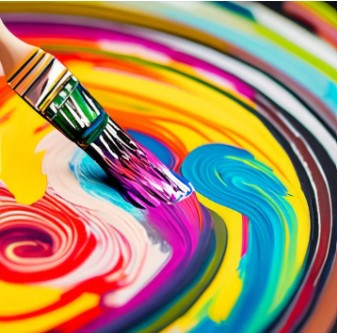

This website has tips on how to color and draw. It has tips for general things like shading, blending, lighting, and a little bit of color theory. It also has tips for many mediums like color pencil, acrylic paint, and watercolor. However, there is not something that specifically adressess coloring online because each app is different, but the general tips still apply. The gallery page has some of the paintings I made to prove that these tips work.
